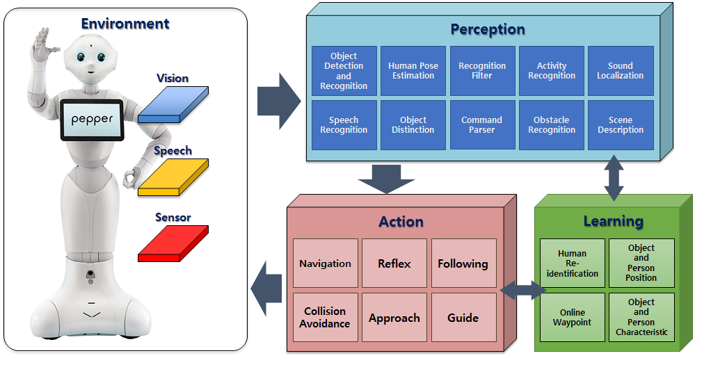

Team TIDYBOY
Biointelligence Lab, Seoul National University
Team TIDYBOY website

In this project, we aim to develop intelligent mobile cognitive robots with a novel architecture based on machine learning. We envision a new paradigm of autonomous AI with state-of-the-art self-supervised machine learning methods to overcome more restricted paradigms of classical AI which use top-down/rule-driven symbolic and bottom-up/data-driven statistical systems. Inspired by human brain process, we propose an architecture which combines deep learning models with memory models to enable the robot to learn more rapidly, flexibly, and robustly in real-world environments. We investigate these autonomous learning algorithms and demonstrate their capability on mobile robot platforms in real home environment settings. With the proposed architecture, we enhance functions of mobile home service cognitive robots by developing technologies such as navigation, concept building, object recognition and schedule learning.